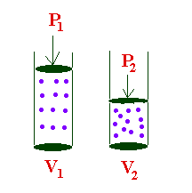

Language and the Brain–Scope and History
The first two weeks of class we dive into our subject matter by introducing some basic concepts underlying the study of language as manifested in neural processes.
Introduction
For the most part, what sets humans apart from other mammals (and really all other animals in general) is the ability to produce and comprehend language–the confluence of a lot of cognitive abilities that may or may not have a centralized control mechanism in the brain. In this class we’ll see evidence for the the former, though some people believe the latter!
Humans do language, while other animals do other sorts of communicative systems (like the stuff you learned in LING1000…birdsong, barks, meows, vervet monkey calls, etc.)
How are we different from those animals that do not have language (as expressed in humans)? Well, we have human brains–brains that are structurally and (we’ll see) functionally different from the brains of other animals. This results in our ability to manipulate abstract representations in the service of communicating ideas through some sort of expressive channel (i.e., mouths/ears, hands/eyes).
OK, then what is it about human brains that allow us to do language? Linguists, psychologists, and neuroscientists are interested in this question (though historically Linguists with a capital-L haven’t spent too much brain power in this pursuit…we can discuss why).
We can say a lot about the relationship between language and the brain by observing how we behave given linguistic tasks and whether or not the behaviour is correlated with neural activity. This allows us to generate theories about how specific components of the linguistic system operate and how they might connect to serve Language as a whole. This is ultimately the goal of neurolinguistics.
Levels of description
- I think the distinction between the types of answers to the questions we might ask is an important one. Brennan calls these “levels of description”
| Level of description | Definition |
|---|---|
| Computational | The “problem” meant to be solved by the brain. The sensory input and the interpretation/output |
| Algorithmic | How the brain solves the problem; basically the function that takes input to output |
| Implementational | How the brain (neurons) and the external language-related organs carry out the algorithm |
<
Molecules of air move in a random pattern, called Brownian motion and collide with each other and other objects at a relatively constant pressure.

Airflow
Air moves from an area high pressure to an area of low pressure in order to equalize → driving pressure. Air only moves when there is a pressure differential between the areas. If there is no difference in pressure between the two areas, there is no airflow.
What is flow?→ the movement of air, measured in volume/time (e.g., l/s). The rate of flow is called volume velocity. There are two types of air flow
- Laminar flow, where there is no obstruction of molecules (this is really not relevant for speech purposes)
- Turbulent flow, where something obstructs the flow (think, ridges in the mouth, your lips, teeth, etc.). Turbulent flow results in small pressure changes around the obstruction.
Pressure
Boyle’s Law
Another important concept for our understanding of speech processes is that formulated by the English polymath, Robert Boyle. Boyle’s law characterized the relationship between the pressure of a gas and the volume of its container.
Boyle’s Law says that that pressure and volume are inversely related. The bigger the container, the lower the pressure; the smaller the container, the higher the pressure of the gas within.

For our purposes, it’s useful to imagine the relationship between two containers, or the same container at different points in time. In the equation below, imagine a fixed mass of gas (ok, air). The relationship between the pressure of that gas and the volume of the container is constant. So increasing the volume would mean a decrease in pressure (so long as the mass of the gas is the same and the temperature doesn’t change).
\[ P_1 V_1~ = P_2 V_2 \]

We know that there are air molecule pressure changes, cumulatively, involved when the volume of the container shrinks or expands, but what exactly happens between individual air molecules?
Compression/Rarefaction
When air molecules collide there is a moment of high pressure. This is called compression. The idea here is simple and can be roughly analogized to the Boyle’s law examples above. Imagine the plunger and bottom wall of the piston are air molecules. As they approach each other (or are compressed), pressure between them increases.
M1→→→→M1 M2
As M1 approaches M2 there is increasing pressure
(compression)

When the molecule “bounces” back and overshoots its original position, it causes an area of low air density, resulting in low pressure → rarefaction
M1 ← M1 ←←← M2
As M1 moves away from M2 there is decreasing
pressure (rarefaction)
Here is a nice video demonstration and explanation of compression and rarefaction of air molecules.
Molucule movement?
Once molecules have been set into motion, three forces keep them moving back and forth before they eventually stop (remember Newton’s Laws?)
- Elasticity: the restoring force that allows an
object to return to its original size, form, location, and shape having
been displaced, stretched, pulled, etc.→ think a stretched rubber band,
when released returns to it’s natural size and shape
- Hooke’s Law captures the basic principle behind elasticity. It says that the restoring force is proportional to the displacement and acts in the opposite direction. So imagine a rubber band. If you stretch it out very far, the “snap back” is fast and hard. If you don’t stretch it very much, the snap back is minimal. This is a good schematic for understanding restoring force. The further the molecule is displaced, the greater the elastic force to bring it back to its starting location and beyond due to \(\downarrow\)
- Inertia: the resistance of an object to change in state of motion or rest
- Friction : the force that opposes motion

Simple harmonic motion
Simple harmonic motion (SHM) results when the restoring force on an object is proportional to the displacement from equilibrium in the opposite direction. SHM is a special type of periodic motion (we’ll discuss periodicity below) that refers to the a back and forth motion that repeats itself at regular intervals.
With SHM, there is acceleration of an object through the “zero point” or equilibrium and deceleration at the endpoints of the movement. In the animation below, the weight’s equilibrium point (or the spring’s natural length) would be represented by y=0.

Frequency
One back and forth movement through the equilibriam point constitutes one cycle of vibration.When describing sound, these cycles refer to the movement of air molecules moving back and forth. When the molecule is set into motion (from some disturbance, like the movement of the vocal folds or the slamming of a door), it is propelled, reaches some maximum, travels back through its original starting point (equilibrium) and proceeds again in the direction opposite the one it initially travelled, then back again to equilibrium (one complete cycle).
This movement results in pressure changes. A cycle when describing sound is:
One cycle = increase in P from Patm (compression), a decrease in P below to Patm (rarefaction), then increase back to equilibrium The number of cycles completed in one second is called the frequency and is measured in Hertz (Hz)
For speech, we very often encounter frequencies in the thousands, so instead of writing, say, 5600 Hz, we might change the units to kilohertz (1000 Hz) giving us 5.6kHz.
Here is a strobe video of a tuning fork. The tines (or arms) of the fork vibrate in unison, moving away from equilibrium, reaching a maximum displacement, then back toward the center and beyond, then back again.
Period
The period of a waveform is the time it takes for one cycle to occur
Period is inversly proportional to frequency. So: \[F = 1/t ; t = 1/F\] If the frequency is 100Hz (or 100 cycles per second), then the period is 1/100 or 0.01 seconds. Period is symbolized as t.
Here’s a little practice question: If t = 0.003, then what is the frequency?The answer selected was ...
Wavelength
The distance completed by one complete cycle of the sound wave is called its wavelength (λ). Wavelength is given in m or cm. The higher the F, the shorter the period (remember F=1/t) and wavelength. Conversely, the lower the F, the longer the period and wavelength.

Velocity
Just how fast a sound wave moves (or its velocity) depends upon the nature of the medium, the substance in which the wave is moving (e.g., air, water, concrete). Denser media allow sounds to travel faster, so sound travels faster in water (than air), and even faster in steel or concrete.
Temperature also affects the velocity of sound, though not so much in liquids and solids. As temperature increases so too does the velocity of the sound wave. So, in warmer air, the velocity of sound increases at a rate of 0.6m/s /deg C.
The “speed of sound” (v) is roughly 330 m/s. (Be very careful with the units of v as some questions will require you to convert!) There is a very important relationship between frequency and wavelength, which relies on v: \[F = v/λ\]
Amplitude
In our description of period, frequency, and wavelength we have (till now) ignored a very important component of our sound wave, namely the displacement of the wave from equilibrium. Remember we referred to “maximum displacement” above?
This maximum height of the wave, above and below the equilibrium point, is called amplitude. For practical purposes (which we’ll spend some time discussing later in the course), the amplitude corresponds to the loudness of a sound. Amplitude is measured in bels or decibels (bel/10).